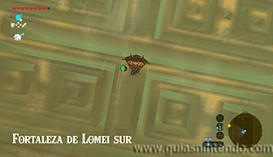
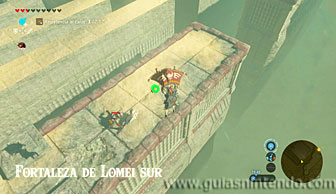
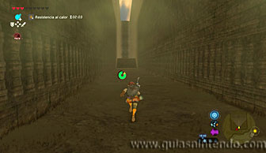
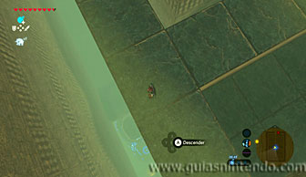
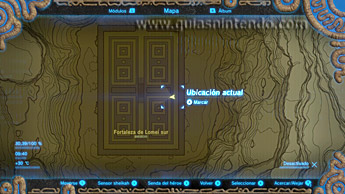
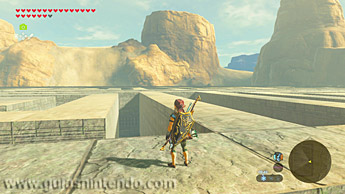
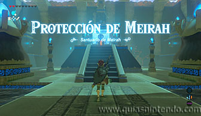
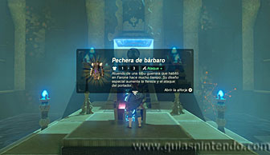

Puedes entrar en este santuario desde que llegas a la región de la torre del cañón. Está dentro de un enorme laberinto, la Fortaleza de Lomei sur (al sureste de la torre del cañón). Debes completar una Prueba heroica (La prueba del desierto) para poder entrar en él, aunque realmente lo que debes hacer es encontrarlo dentro del laberinto, en eso consiste la prueba heroica. A la fortaleza puedes llegar planeando con tu paravela desde la montaña que hay al este o desde la misma torre.

Una vez en la entrada, puedes recorrer sus enormes pasillos buscando el camino correcto (también algún cofre que contiene rupias), pero es mucho más sencillo que busques el santuario si vas por encima de los muros.

Para ello bájate en los muros de la fortaleza cuando llegues en paravela y dirígete hacia el punto medio del muro este. Desde ahí podrás dejarte caer y encontrar el pasillo que te llevará hasta donde se encuentra el santuario. La prueba heroica se completa en cuanto llegas a la entrada del santuario.

Dentro del santuario solo encontrarás un cofre que contiene la Pechera de bárbaro y después solo te quedará caminar para llegar al altar y conseguir el símbolo de valía.
